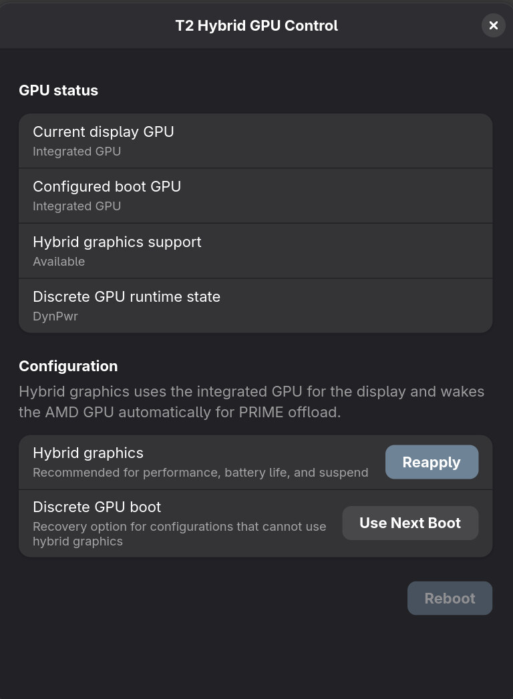
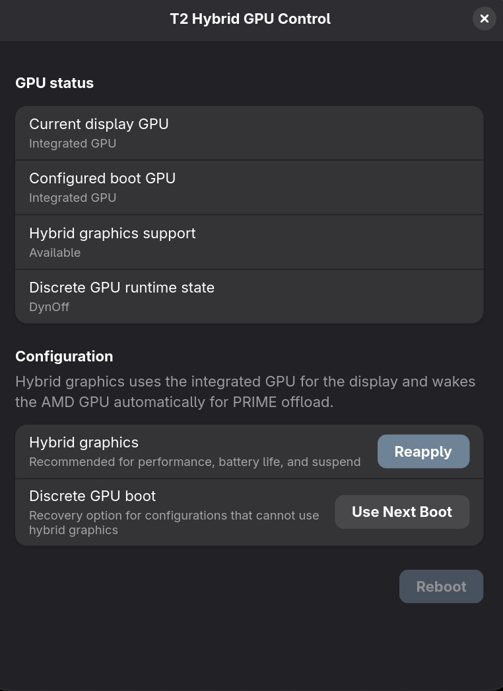
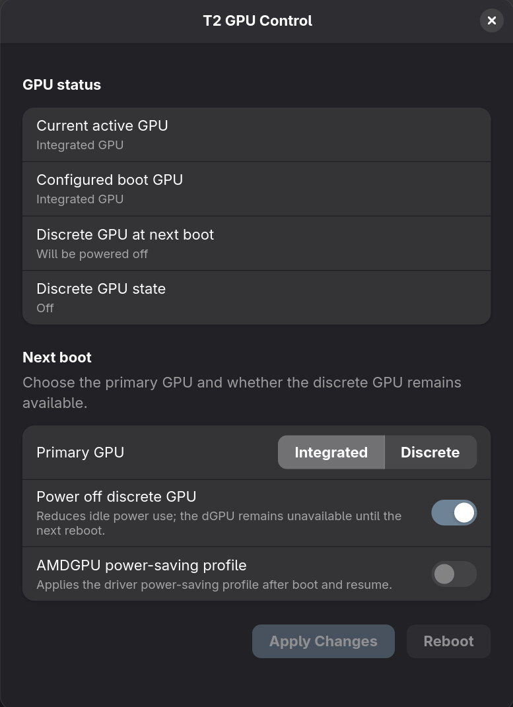

The Navi rabbit hole
Hybrid graphics on the 16-inch MacBook Pros can turn the dGPU off. Bringing it back reliably is where the hardware starts telling a much stranger story.
Once hybrid graphics worked on the MacBookPro15,1, the next step looked almost offensively easy. Add the 16,1 and 16,4 to the same list, build, reboot, done. They also have an Intel GPU, an AMD GPU and Apple GMUX. What could possibly go wrong?
Pretty much everything.
The 15,1 has a Polaris GPU sitting directly on its PCIe path. The 16-inch models use Navi, and Apple put an entire little AMD PCIe switch in front of it:
Intel root port -> AMD upstream bridge -> AMD downstream bridge -> Navi GPU
So we were not switching one device anymore. We were pulling the floor out from under a small PCIe family and hoping everyone would find their seats again when the lights come back on.
The eDP-2 ghost#
The first clue was already there during boot. AMDGPU found an internal eDP-2
connector, tried to read an EDID from it and got nothing useful back:
[drm] *ERROR* EDID err: 2, on connector: eDP-2
[drm] *ERROR* No EDID read.
[drm] Adding stream ... to context failed with err 28!
This was not just a connector name invented by software. The hardware exposes
it and DRM reports it as connected, but it is disabled while the Intel GPU is
driving the panel through GMUX. Treating it like a normal active AMD panel
created EDID errors, failed display streams and a dGPU that stayed in
DynPwr.
Skipping that inactive GMUX connector cleaned up the boot and finally gave us the line everybody wanted to see:
0:IGD:+:Pwr:0000:00:02.0
1:DIS: :DynOff:0000:03:00.0
2:DIS-Audio: :DynOff:0000:03:00.1
For a moment this looked brilliant. The usb ampmeter agreed. The dGPU was off. Ship it, right?
Nope.


DynOff was actually not Dyn - just off#
DynOff proves that the GPU was off. Hybrid graphics also requires it to
power on every single time an application asks for DRI_PRIME=1, an external
display is connected or the desktop simply feels like having a look at the
available render devices.
On the Navi machines the GPU and both AMD bridges can disappear into D3cold. That is excellent for battery life and slightly less excellent when the return path is wrong. One of our best-looking resume power states was this:
0000:00:01.0 suspended D3hot
0000:01:00.0 suspended D3cold
0000:02:00.0 suspended D3cold
0000:03:00.0 error D3cold
DIS: DynOff
Not funny.
We preserved bridges, kept them awake, restored bus numbers... We
followed Apple's ACPI PWRD method. We tried the GMUX power sequence that works
on Polaris, moved waits around and added enough logging to make the journal
look like a nervous breakdown in monospace.
Sometimes the bridges came back. Sometimes PCI configuration space came back. Sometimes firmware even claimed it had completed successfully. The GPU still did this:
amdgpu 0000:03:00.0: not ready 16383ms after resume; waiting
amdgpu 0000:03:00.0: not ready 32767ms after resume; waiting
amdgpu 0000:03:00.0: not ready 65535ms after resume; giving up
t2gmux: DGPU power-on: PWG1 completed successfully
t2gmux: Timed out waiting for DGPU to power on
And when we managed to get farther, Navi found another cliff:
[drm] *ERROR* atombios stuck in loop for more than 20secs aborting
amdgpu 0000:03:00.0: amdgpu asic init failed
amdgpu 0000:03:00.0: resume of IP block <gfx_v10_0> failed -110
That is the nasty part. The visible failure moved. First the device was gone. Then the bridges were gone. Then both were back, but the GPU firmware did not recover. Every patch seemed to unlock the next door only to reveal another locked door behind it. And always that bad feeling in our necks we do it wrong from the start. Like "maybe we don't kiss her goodbye and that's why she's angry when we come cack?". I mean that's typical Apple. When you put something to sleep on a T2 Mac, it usually will die. We had that with thunderbolt before and with the 15,1 dgpu, with system suspend... Neverending story.
acpi, amdgpu, gmux, vgaswitcheroo, intel_hda, i915#
Jeeez... this is no fun.
Gloriously misleading test results. And possible issues in every driver. Also Apple's OSDW ACPI paths can drive you crazy. I still don't support the idea to masquerade Linux as Darwin by default.
One boot reached DynOff. One suspend and resume worked, although keyboard,
trackpad and screen took forever to return. Another boot left the dGPU in
DynPwr. A manual wake gave us a beachball and killed the desktop, while
switching to a TTY made the GPU turn off again as if nothing had happened.
At one point a tester reported four successful suspend cycles. Great. The dGPU then refused to switch off after the next reboot. Less great. Without the exact log from the successful run, that result was useful mainly for proving that a race condition might be hiding somewhere in the pile.
The MacBookPro16,4 joined the party later and reproduced the important part: we could power its Navi GPU off, but waking it ended in the same long PCIe wait, ATOM BIOS loop and ASIC-init failure. Different Navi GPU, same rabbit hole.
The fallback is less clever, but it works#
Until Navi can survive that complete power cycle, KAIT2EN installs the regular T2 GPU Control app on the affected models. It selects Intel, AMD or the power-saving mode and writes the required Apple NVRAM preference. The user has to reboot, but that is still considerably nicer than writing NVRAM variables by hand or juggling GMUX kernel parameters.

Hybrid graphics is not automatically the best mode for every job either. If a game is already struggling to reach 60 FPS, rendering on the dGPU and copying its framebuffer through the iGPU is not where you want to spend the remaining headroom. Competitive gaming is one perfectly valid reason to boot with the dGPU as primary and avoid that copy completely.
So this is not a useless consolation prize. It covers both the battery-friendly desktop setup and the direct dGPU path without asking users to become experts in Apple's boot variables. It is simply not the seamless runtime switching we still want for the 16,1 and 16,4.
This seems to be our Waterloo#
This was three days of roughly 18-hour sessions. Two developers fired patch after patch at poor @Err0r, one of our MacBookPro16,1 testers. While @Err0r rebooted, switched to TTYs, restarted GDM and kept sending back logs @zeroPressure00 supplied the strange suspend results, and @Samryu later put a MacBookPro16,4 through the same routine. Also for hours trying a variety of approached.
Wishful thinking...
Thanks also go to @byte aka @!ruiCON. for living in this mess with me.
The 15,1 foundation has since become a proper upstream patch series. Work on the 16,1 and 16,4 can continue on top of that base, but it needs a real Navi power lifecycle. Another random delay or another bridge held in D0 is not a fix.
This one nearly drove everyone involved around the bend. It is still not over. But at least we now know which rabbit hole we are actually standing in.